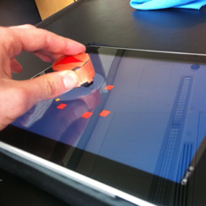
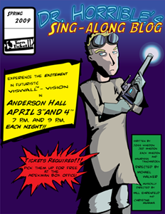

Hi. I'm Mike.
I like to make things that bring happiness and deeper meaning to people's lives. Above all, I believe in building things that are fun, quirky, and thought-inspiring.
These days, that mostly means designing and developing rich web apps. My expertise is in user experience design and front-end web technologies, but I have experience with server-side and native iOS development as well. What I love about freelancing is getting to help different people build things through close collaboration; in my experience, the difference between building something good and building something great isn't how skilled you are at your craft (although that obviously matters), it's how skilled you are at working together. I'm always looking for new clients, so feel free to get in touch if you're perhaps interested in collaborating.
I live in New York, but I'm a Californian at heart. I'm a cyclist, homebrewer, former Quidditch captain, playwright and director, accordionist, avid reader, and lover of board games.
I help other people build cool things.
Timehop shows you status updates and photos you took one year ago today. I helped prototype and build their iPhone app.
Lore is a free Learning Management System (LMS) for university courses. I helped build their current product.
Words With Friends is one of the most popular word games on iOS, Android, and Facebook. I supported the launch of the Facebook HTML5 client, and built the HTML5 mobile client.
I make other awesome stuff, too.
Scribe
Scribe is a web-based sheet music notation application.
Unlike existing software, Scribe is built around the needs of composers and songwriters rather than publishers. Instead of providing complex layout tools, it focuses on making it as easy as possible to edit the content of your music. When printing a piece, Scribe's servers analyze and typeset it for you, producing a score comparable to ones made by a professional copyist.
Scribe is currently in private beta.
GetchaBooks
In 2010, I created a textbook comparison service called GetchaBooks with Ricky Mondello and Mike White.
GetchaBooks helps students buy their textbooks by combining a price comparison service with course list data. Just enter what courses you're taking, and GetchaBooks will tell you what books you need and where you can get them the cheapest, even accounting for factors like savings on combined shipping.
In July 2012, we open sourced the entirety of the GetchaBooks codebase. Check it out on GitHub!
Tangible User Interface Research

For my undergraduate thesis, I conducted original HCI research exploring tangible and multitouch interfaces in gaming.
I built a twin-stick shooter for the iPad with three different control schemes, including a tangible interface where the player physically moves a custom-built plastic game piece on top of the iPad's screen. The study explored the relative performance of each interface among test participants, focusing specifically on ease of learning, overall performance, and the use of optional multitouch gestures.
The full whitepaper is available on the Bard College Digital Commons.
I occasionally make things that aren't software.
Annandale Ales
In college, I co-founded an on-campus nanobrewery. We held weekly pub nights where we served hand-crafted beer and soda to students, faculty, and other community members.
I formulated original recipes for dozens of different sodas, all made from fresh, all natural ingredients. Favorite flavors include basil balsamic strawberry, lavender honey cream, and pear rosemary. I'm currently working on a series of blog posts with recipes and more info. Stay tuned!
Dr. Horrible's Sing-Along Blog

In the spring of 2009, I directed the first authorized stage adaptation of the cult internet musical Dr. Horrible's Sing-Along Blog.
My production concept was to create a "real-life comic book", where live actors interacted with comic book-style sets to play up the show's campy superhero roots.
I collaborated with a graphic artist who created digital illustrated backdrops, props, and comic book-style special effects that were projected behind the actors using the Tufts Center for Scientific Visualization, a NSF-funded projection system at Tufts University.